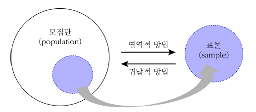

Chapter 1 서론
1.1 통계학이란?
통계학은 관심 또는 연구대상이 되는 집단(모집단)의 특성을 파악하기 위해 모집단으로부터 일부의 자료(표본)를 수집, 정리, 요약, 분석하여 표본의 특성을 파악하고 이를 이용하여 모집단의 특성에 대해 추론하는 원리와 방법을 제공하는 학문
통계학은 일차적으로 기술통계학과 추론통계학으로 구분
자료를 분석하는 경우에는, 분석 단계에서 기술통계를 먼저 이용한 후 추론통계를 사용하는 것이 일반적이기 때문에 두 분야를 따로 구분하여 생각하지 않음
기술 통계학(descriptive statistics)은 수집된 자료의 특성을 쉽게 파악할 수 있도록 자료를 표나 그림 또는 특성값 등을 통하여 정리, 요약하는 방법을 다루는 분야이다.
추론 통계학(inferential statistics)은 모집단으로부터 추출된 표본의 정보를 사용하여 모집단의 특성을 파악하는 분야이다.
대부분의 사람들은 통계학의 기본이 자료요약이라고 생각하지만 이보다 더 중요한 것은 단순히 관찰되는 사실을 통해 특정한 문제에 대해 과학적으로 결론을 내릴 수 있는 추론통계학임
다시 말해 추론통계학을 통해 사회현상에 대한 주요한 결론을 도출 할 수 있음
통계학의 구분

추론통계학의 사용 예제
- 특정 교차로의 교통량 연구
- 출퇴근 시간, 주중 또는 주말 등 대표적인 시간에 교통 흐름 관찰
- 넓은 시간 간격으로 인해 관찰이 불가능. 추정으로 해결해야 함
- 품질관리를 위한 불량률 조사
- 생산품에 대해 주기적으로 조사
- 모든 생산품을 조사하는 것은 불가능. 추정으로 해결해야 함
- 신약개발을 위한 연구
- 새로 개발된 신약이 효과가 있는지 알아볼 필요가 있음
- 모든 사람에 대해 효과가 있는지 관찰하기 어려움
- 임상시험을 통해 대조군과 시험군의 생존시간을 관찰 후 가설검정 절차를 통해 결론 도출
현대통계학의 가장 주요한 주제는 추론통계학!!!
통계학을 방법론적인 측면에서 살펴보면 연역적(deduction) 방법과 귀납적 (induction) 방법으로 구분
- 연역적 방법: 모집단에 관한 정보를 이용하여 모집단으로부터 추출된 표본의 특성을 파악하는 방법
- 귀납적 방법: 표본의 정보를 이용하여 모집단의 특성을 파악하는 방법
예) 라디오 공장의 라디오 불량률
- 라디오 공장의 라디오 불량률이 5%라는 것을 알고 있을때, 이 공장에서 생산되는 라디오에서 표본을 추출하여 불량률을 조사하면 5%에 가까울 것이며 이러한 경우를 연역적 방법에 의한 추론이라 함
- 전체 라디오 생산품 중 표본을 추출하여 불량률을 조사하였더니, 불량률이 5% 였다면 이 공장에서 생산되는 라디오의 실제 불량률이 5%에 가까울 것이라고 생각할 수 있음. 이러한 경우를 귀납적 방법에 의한 추론이라 하고 추론통계학의 기본 방법임
현대통계학에서 주로 관심을 갖는 방법은 귀납적 방법!!!
연역적 방법과 귀납적 방법

1.2 통계학의 실질적인 문제
- 통계학의 실질적인 문제 1
- 선거의 결과 예상 - 조사원들은 미리 결정된 인원수에 대해 국민들의 의식을 조사하고 그들의 성향을 기록한 후 이러한 정보를 바탕으로 선거 결과를 추정
- 시장조사 분야에서 각 브랜드의 담배를 선호하는 흡연자들의 비율 추정
- 사회학분야에서 어떤 지역의 선거 예상 투표율 추정
- 산업분야에서 구매된 물건들과 생산된 물건들 간의 불량률의 차이 추정
∗ 표본조사를 통해 정보를 획득하여 모집단 전체의 특성을 파악
통계학의 실질적인 문제 2
- 초·중·고 학생들의 연간 사교육비 추정 - 모집단에서 무작위 추출된 학생들을 대상으로 사교육비와 해당 지역, 가구소득, 학교급 그리고 학년 등에 대한 여러 요인들의 정보를 같이 조사함으로써 연간 사교육비에 관련된 통계적 예측 모형 구축
통계학은 단순히 특성값을 예상하는 것에 그치는 것이 아니라 관찰된 자료를 바탕으로 가설검정 절차를 통해 의사결정을 하는 학문
새로운 감기 백신에 대한 효과를 결정하는 문제를 생각해 보자. 10명의 사람들이 새로운 백신을 접종하였고 겨울동안 그 사람들을 관찰하여 10명 중에 8명이 감기에 걸리지 않았다고 하면 이 백신이 효과가 있는지 여부에 대한 판단을 통계적으로 내릴 수 있음
통계학의 실질적인 문제 3
- 새로운 독감 백신의 유효성 결정 - 100명의 임상시험 참여자들에게 새로운 백신을 접종하였고 일정기간동안 그 사람들을 관찰하여 100명 중에 80명이 독감에 걸리지 않았다고 하면 이 자료를 토대로 백신의 유효성 여부에 대한 결정을 통계적으로 내릴 수 있음
- 새로운 교수법 개발 - 학업능력이 비슷한 두 집단의 학생들에게 두 가지 다른 교수법으로 강의 후 각각의 집단에 대해 성취도를 측정하여 하나의 교수법이 다른 교수법보다 학업성취도가 더 높은지 통계적으로 검정
- 제조공장의 물품 조사 - 구매한 물품들을 각 로트 단위로 수용 혹은 반품을 결정해야 하는 경우, 각 로트로부터 10개의 물품들을 무작위로 추출하여 불량품의 개수를 파악한 후 각 로트들의 수용 여부를 결정 할 수 있음
1.3 모집단과 표본
연구대상이 되는 모든 가능한 관측값이나 측정값의 전체 집합을 모집단(population)이라고 한다.
공장 생산품에 대한 신뢰도 연구 - 모집단은 공장에서 생산되는 모든 제품
운송 상의 제품의 품질 관리 - 모집단은 모든 운송 상의 각 항목에 대한 전체 제품
*모집단의 특성을 수치나 기호로 나타내는 것을 모수(parameter)라고 하고 모평균(\(\mu\)), 모표준편차(\(\sigma\)), 모비율(\(p\)) 등이 있음
모집단은 알려져 있지 않고 완전하게 구성되어 있지 않음
예) 공장에서 생산되는 모든 제품 - 시간상 모두 검사할 수 없고, 시간의 여유가 있다 하더라도 검사 하는 동안 제품이 판매되어 없기 때문에 모집단 전체에 대한 정보를 알아 볼 수 없음
모집단의 일부를 추출하여 그 일부를 통해서 모집단의 특성을 파악하는 것이 보다 효율적임. 즉, \(실험\)(experiment)을 통해 모집단을 대표할 수 있는 일부 집단을 추출하여 조사하면 이를 해결할 수 있음
예) 공장 생산품에 대한 신뢰도 연구를 위해 모든 제품 중 단 40개의 제품만 추출하여 조사하는 경우 - 추출된 40개의 결과를 통해 모집단에 대해 추론이 가능하며, 추출된 일부 집단을 표본이라고 함
모집단 전체의 특징을 파악하기 위하여 모집단으로부터 추출된 일부분을 표본(sample) 이라고 한다.
통계학의 목표는 모집단에 대한 추론이며 표본으로부터 얻은 정보를 이용하는 것
표본은 추출 방법에 따라 차이가 존재하지만 일반적으로 모집단의 성질을 간직하고 있다고 가정
따라서 모집단의 특성을 얼마나 잘 반영하고 있는지가 좋은 표본을 결정하는 기준이 됨
표본의 특징을 나타내는 값을 통계량(statistic)이라고 하고 표본평균( \(\bar{X}\)), 표본표준편차(\(S\)), 표본비율(\(\hat{p}\)) 등이 있음
표본추출에서 가장 중요한 것은 추출방법과 크기
특정 교차로의 교통량을 연구 - 카메라 측정 장치에 의한 조사, 조사원의 관찰 조사 방법 등이 있음. 어느 정도의 시간을 조사해야 신뢰할만한 추정을 할 수 있는지에 대한 파악이 중요
특정 기계에 대한 강도를 연구 - 파괴 검사, 특정 기계가 매우 높은 가격을 가지고 있다면 최소한의 표본크기 고려. 신뢰할만한 결정을 내리기 위해서 몇 개의 표본을 검사해야 하는지 고려해야 함
호수의 박테리아균에 대한 조사 - 표본을 통해 조사해야하며 표본에서 박테리아의 배양균을 이용해야 함. 각 표본의 물의 양은 얼마로 해야 하는지, 표본이 몇 개 필요할 것인지에 대한 결정이 필요
공장 라인의 불량률 조사 - 표본 선택을 위한 시간간격에 대한 고려
농작물의 생산량 연구 - 실험을 통해 최적의 기준 추정. 온도, 기압, 강수량, 비료종류, 품종 등의 실험조건을 합리적이며 과학적인 근거로 적절하게 조절